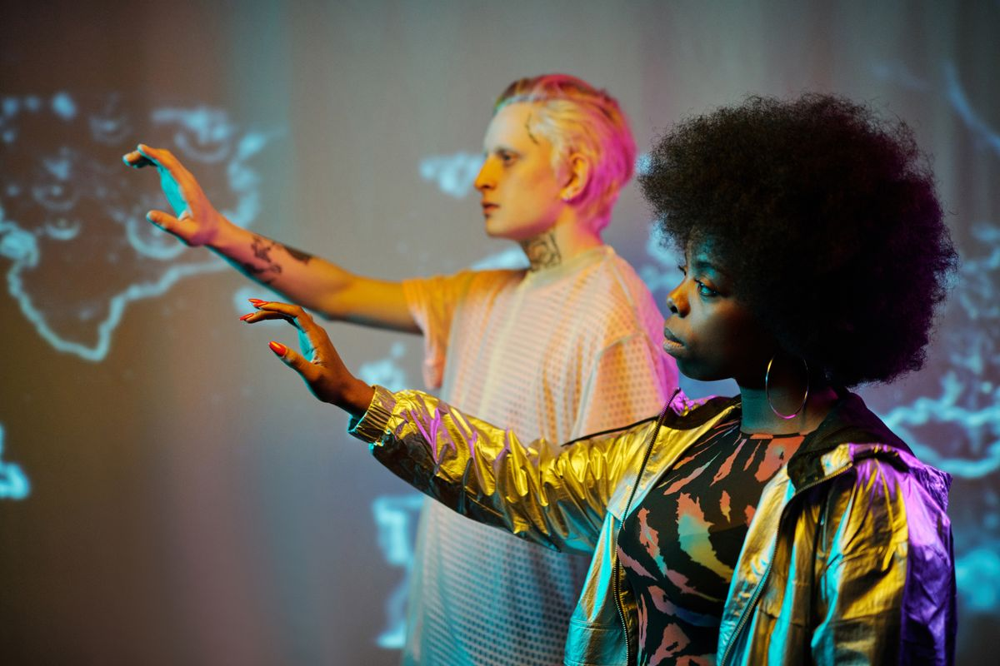

The practice
Designed on the bench, not in a render.
Iris Kwan came to spatial interfaces from human–computer interaction research, where she spent four years running usability studies on other people's prototypes — and watching the same demos that dazzled in a keynote fall apart in a bright room, in gloves, in the hands of someone over sixty. Holo Mesh, founded in Toronto in 2021, is built on the lesson: if it hasn't run on the device, in the room, with real hands, it isn't designed yet.
The studio is deliberately small — Iris designs and builds every interface herself, with a contract engineer for heavy platform work — because spatial projects fail at hand-offs. The bench holds the current test fleet: two light-field displays, three headsets, one reflection pyramid, and a light meter that has ended more arguments than any meeting. Clients get the measurements from that bench in writing, including the unflattering ones.
Most engagements are galleries, industrial firms and retailers — organisations whose visitors and technicians are not early adopters, and whose spaces are not demo rooms. That is the point. An interface that survives a plant room at 80 lux will survive anything; one tuned for a launch video survives the launch video.
The studio's one house rule, printed on every budget sheet: every platform is named by what it actually does. Light-field is not holography, a reflection pyramid is not a hologram, and passthrough video is not the world. Clients deserve the true word, because the true word is what their visitors will experience.

Fig. 05 · Deliverables & compatibility
What you receive, and what it runs on.
This table is part of every proposal. If a platform or a budget isn't listed here, it gets measured in the spike before it is promised anywhere.
| Item | What you get / what holds |
|---|---|
| Formats | glTF 2.0 and USDZ for content, FBX on request, plus the full Unity or Unreal project — source included. Nothing is locked inside a proprietary runtime without a source export. |
| Light-field | Looking Glass (Portrait, 16″, 27″, 65″) and Leia displays. Scenes held to ≤90k triangles and a sustained 60 fps on the display's own PC. |
| Headset AR | HoloLens 2, Magic Leap 2, Quest 3 passthrough, and WebXR / AR Quick Look / Scene Viewer for phones. Standalone scenes held to ≤100k triangles, ≤120 draw calls. |
| Package budgets | Installed packages ≤150 MB; anything a visitor loads in a browser ≤50 MB. The budget sheet ships with the files, counted the way the specimen on the home page counts. |
| Legibility | Interface text is set to stay readable at working distance — a 24 px at 1 m equivalent minimum, verified on the device, not in the editor. |
| Testing | Every build runs on the shipping hardware, in lighting matched to the venue, before delivery. Gesture interfaces are tested with at least twelve people, including gloves and limited mobility where the venue demands it. |
| You supply | Product CAD or models (or a cleanup budget — they rarely arrive usable), brand assets, access to the space for a measure-and-scan visit, and one target device on loan for the spike. |
Fig. 06 · Honest limits
What this technology cannot do yet.
Every item below has ended a project somewhere. Knowing them up front is cheaper — the spike exists to find out which ones apply to yours.
×No free-floating holograms in daylight
The displays that exist are light-field panels, headsets and reflection tricks. Each is good at its job; none is the film version. Your project will use one of them, named correctly.
×Additive displays cannot show black
On headsets and many volumetric displays, black is transparent. Dark, moody interfaces turn invisible — palettes for this work are designed light-first, on the device.
×The field of view is a keyhole
Current headsets show 50–70° of the world. Interfaces are designed for the centre of that window; the edges carry alerts, never content a user must find.
×Tracking drifts
World-locked content wanders — centimetres over a working shift. Serious installs re-register their anchors on a routine, the way Northline's technicians do at every pump.
×Batteries end the demo
Two to three hours is a shift, not a day. Anything longer is designed tethered, kiosk-powered, or around a device-swap routine — decided in the spike, not discovered at the opening.
×Some people can't use it
Motion sickness, glasses, one-handed use, tremor — a share of every audience is excluded by any spatial interface. Every installation therefore ships with a non-spatial fallback: a screen, a print, or a person.
Find out which limits are yours.
That is precisely what the two-week spike measures — on your device, in your room.
Book a feasibility spike or write directly — iris@holomesh.studio